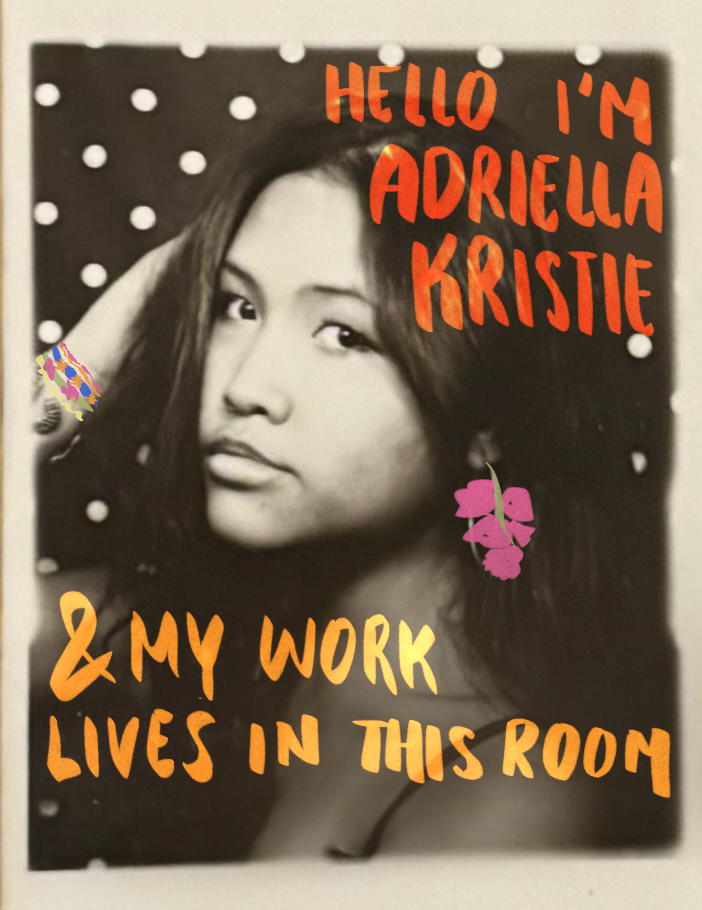

About Me
Computer Engineer + Integrated Design & Media @ NYU, and something about me, I love chairs.
Why Chairs?
- Somewhere to rest, wait, or gather with others.
- Something functional, comfortable, or just nice to look at.
- So many shapes, details, and little features that make each one unique.
- A mix of creativity, practicality, and clever engineering.
To me, chairs are where design and engineering meet.
I design the things I build, and I build the things I design. Engineering teaches me how things work, while design reminds me to think about how people experience them. Because countless solutions can exist, but what's the point if people don't actually enjoy using them, see their value, or want to come back to them?
Mindset:The best way to control your future, is to control your present
- Joe DeVico, Senior Managing Director at BlackRock
Some of my favorite chairs
a. Globe Garden, Peter Opsvik b. Mies chair, Archizoom Associates c. Anne Dereaux d. source (Pinterest) e. own imagination, soon realization
Computer Engineer
Computer Engineering Major at NYU, Web development for an NYU Course, Ex Mobile Engineer intern @ startup, Dean's List
Creative Technologist
I love creating interactive web experiences, generative art, product design, and this 3D room you walked in through
Artist
Drawing, painting, animating, 3D modeling, film photography all bring me so much joy! I enjoy seeing things look good, and I think people call that taste
Eternal Learner
To live is to learn. You can learn to do anything. Knowledge is abundantly easier to attain now. Learn from machines, learn from people, learn from experiences.
Believer
“For in this hope we were saved. But hope that is seen is no hope at all. Who hopes for what they already have? But if we hope for what we do not yet have, we wait for it patiently.”
Anything
Growing up I loved Barbies and now their motto has really stuck with me:
“You can be Anything”
I am also the BIGGEST brioche bread fan
Shoutout to Trader Joe's French Brioche Toast